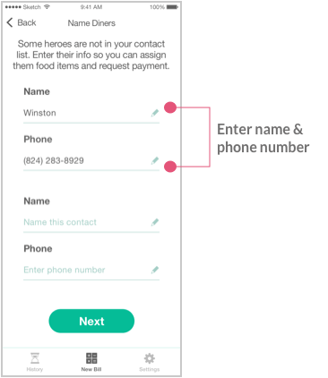
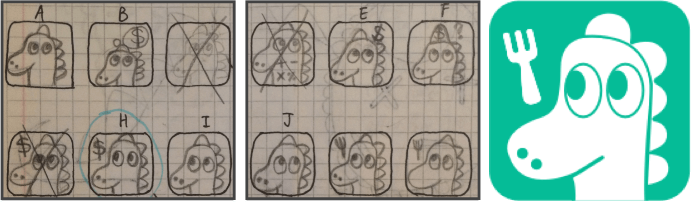

Problem
Splitting a bill after a meal is often a headache. It’s socially awkward and mathematically challenging to find out who owes what.

Split restaurant bills by who eats what
Have you ever tried to do math on the back of a napkin? After your waiter brings the check, it’s not always a walk in the park to figure out who needs to pay how much.
This is my story of creating Dinersaur — an iOS app that splits restaurants bills based on who eats what.
Platform
iOS
Duration
8.5 weeks
When
2018
Splitting a bill after a meal is often a headache. It’s socially awkward and mathematically challenging to find out who owes what.
I was the sole designer for this passion project. My responsibilities included user research, market research, interaction design, and visual design.
The design principles I followed are Nielsen Norman’s heuristics:
Duration
1 week
The frustration with splitting was about fairness and accuracy. Nobody likes being stuck doing math on a napkin. Whether it's dividing the bill or paying their share, users want a quick and simple solution. Research showed that target audience was roughly divided into three groups.

Tony
Job:
Entreprenuer
Age:
28 years old
Location:
Sydney
Goal:
Because of his hectic schedule, Tony is usually eating out with his coworkers. He wants to split by person and requests payment after a meal.
Frustration:
It's not easy to request money since I'm often the one picking up the tab.

Rebecca
Job:
Marketing Manager
Age:
48 years old
Location:
New York
Goal:
Rebecca is always checking out the new restaurant on the block and likes sharing appetizers with her friends. She wants to split by person.
Frustration:
It’s hard to split the bill when people share different appetizers.

James
Job:
Senior Engineer
Age:
36 years old
Location:
San Francisco
Goal:
James and his wife usually eat out with their friends to save time from cooking. He wants to take a picture of the receipt and split by person.
Frustration:
It’s hard to keep track of who eats what and calculate tip. It's not easy to request money since I'm often the one picking up the tab.
Duration
2 days
Since Dinersaur’s goal is to help diners split the bill, I looked up apps in both Apple and Android’s app stores to examine how they handled assigning the costs. My product strategy was to consolidate competitors' best features into four easy steps: scan, split, send, and pay.
| Whom did I research: | Plates, Divvy, and Tab |
| Why I chose them: | They have good reviews |
| What I learned from them: | Users want an error-proof experience that requires minimal input |
Because Dinersaur’s core feature was to split a bill by person, you could almost view the app as a calculator. It needed to be instructional, intuitive and accurate.
How I iterated on the nav bar
Duration
1 week
The challenge I ran into was understanding how users want to navigate Dinersaur. Nav bar evolved during the entire design process. Early sketches of the navigation system had four versions. I experimented with different top nav and even getting rid of the bottom nav completely.
Taking a closer look examining these four pencil sketches, I implemented a traditional look so that users didn’t have to go through a learning curve, and kept the button in the body for a clear call-to-action. For the bottom nav, I merged “History” and “Settings” so that users could focus on Dinersaur’s core feature: splitting bills.
Remembering that fewer clicks are better, I added a toggle menu at the top so that users could easily switch between account settings and past bills.
I realized I didn't understand user's desire to know where everything was in one glance. During user testing, respondents suggested taking "History" out of "Settings" so that they wouldn't have to look this function. Users don't like it when they can't find what they need.
How I choreographed the flow
Duration
3 weeks
Obviously, there are two common ways to split a bill: by person or split even. Based on my survey results, on the top of the wish list is to split by person. However, respondents also answered yes when asked if they would like to have the option to split evenly. This is why I kept both splitting methods in Dinersaur.
Dinersaur works like a calculator. It needs users to enter a variable in order to return a value. As we can see, users need to input a lot of information. My goal is to minimize the amount of data and the frequency users have to enter. There are two piece of information required from users:
| Food data: |
|---|
| Name of each food item |
| Price |
| People data: |
|---|
| Name of each person |
| Phone number |
Users input everyone's name
Dinersaur remembers everyone’s name
Users input price for each food item
Dinersaur remembers price for each food item
Users input who orders what food
Dinersaur remembers who orders what
Dinersaur calculates how much everyone should pay
Goal: Split by person
Let’s focus on the first piece: food. Food information includes two parts:
| Food data: |
|---|
| Name of each food item |
| Price |
Apps such as Plates ask users to enter the price for each dish. This can be annoying if you and your friends ordered a lot of food. So I decided to give users the option to scan their receipt and let Dinersaur grab the numeric values using OCR technology.
Now let’s focus on to the second piece: people. People information includes three parts:
| People data: |
|---|
| How many people |
| Name of each person |
| Phone number |
My first attempt was to ask users to name each person at the table so that they could track who ordered what. After that, I asked users again to enter everyone's phone number when they were ready to send the bill.
Survey respondents commented that it was inconvenient having to input information twice. I listened to their feedback and combined the two steps into one.
Here’s how user flow evolved during this process:
How I re-created the dining experience
Duration
2 weeks
My goal is to recreate the dining experience and present it in a way that is realistic and easy to understand. My solution is to create a seating chart. Everyone sits around a table, and there is a plate that has their name on it.
In a real world, people share food. Imagine Amy, Brian, Christy and Diego go out to eat at a seafood restaurant. They all like calamari, so they order three plate and share. Amy orders his favorite bowl of shrimp curry. Christy and Diego like crab cake, they place one order and share. Amy and Brian are crazy about oysters, they order five plates and share. Amy and Christy are on a diet but still want dessert, so they order one piece of chocolate cake and share. When people order food individually but also as a group, this makes it complicated to split the bill.
To tackle this challenge, my first attempt was to have a sharing plate. I envisioned users drag an item to the center of their phone and then tap on people who shared it. As I kept iterating, it became tiring to drag every single food item to the sharing plate. Instead of making the food name a draggable sticker, I could simply display the food name and let users go directly to selecting people. This revision led to fewer clicks and a cleaner interface.
Removing the sharing plate means fewer steps.
Bringing Dinersaur to life
Duration
2 weeks
Considering that most of my users are millennials, I wanted to ensure Dinersaur caters to this demographic. After I finalized the wireframes and interaction design, it was finally time to bring Dinersaur to life.
The name dinersaur was a wordplay for the words dinosaur and diner. The goal was to create a playful brand personality. User testing showed unanimous support; people complimented on its pun-tastic name.
This meant the logo would undoubtedly have something to do with a dino. The initial sketches were different illustrations of a full-body baby dino wearing a bib with a calculator printed on it. The next step was to make our dino friend scalable. My awesome mentor suggested zooming in on the dino face. This led to a few more iterations on paper before transferring it to Illustrator.
Finding a brand color isn't easy and I took the time to hear user's thoughts. After filling in our dino friend in various colors, I asked people to pick their favorite. The majority of survey respondents voted for green. They reasoned that green was refreshing and friendly. I then added support colors to complete the palette.
The challenges I ran into were mostly around navigation and the core user flow. A couple testing results took me by surprise; it was always a good idea to find out what problems users are facing instead of assuming they’re just like me.
Dinersaur delivered a simple and elegant way of splitting a bill by who eats what, sending the receipt, and requesting payments. Our survey respondents especially commented on its playful branding, ease of use, and clean interface.
Feedback from user testing
Feedback from user testing
Feedback from user testing
From a business perspective, it would be convenient to let users pay their share of the bill from the app. Dinersaur can link a credit card and let users send individual payments to the restaurant by scanning a QR code. Since restaurants are sometimes reluctant to accept multiple credit cards, Dinersaur needs to come up with incentives that can help them cooperate.
From a programming perspective, I recommend looking into affordable and accurate OCR technology to scan the receipt. Dinersaur would need access to payment service APIs such as Venmo.
Let's Talk